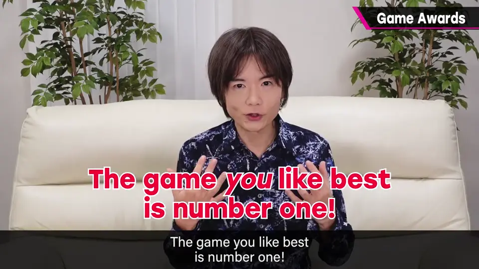
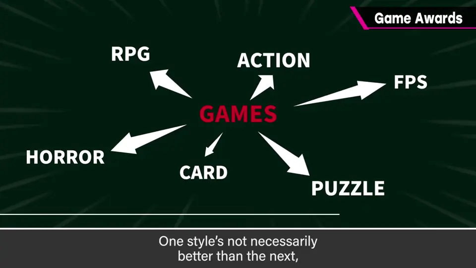
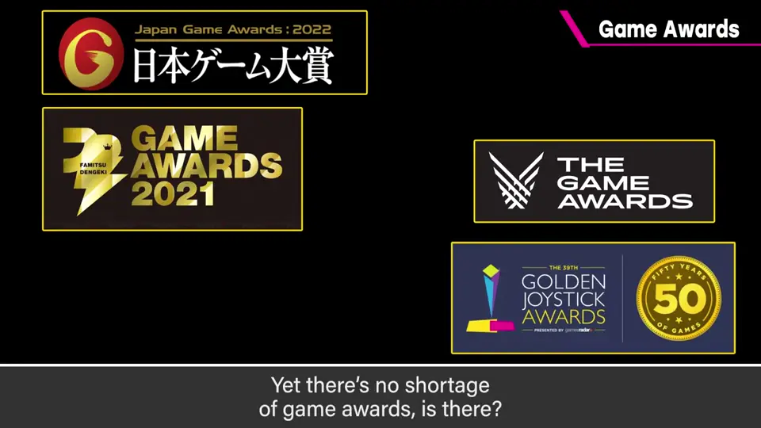
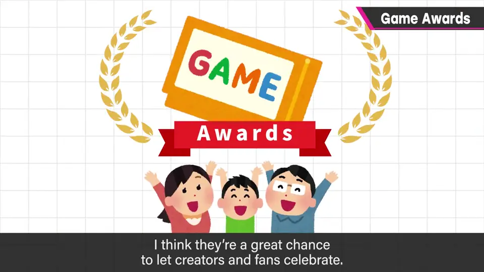
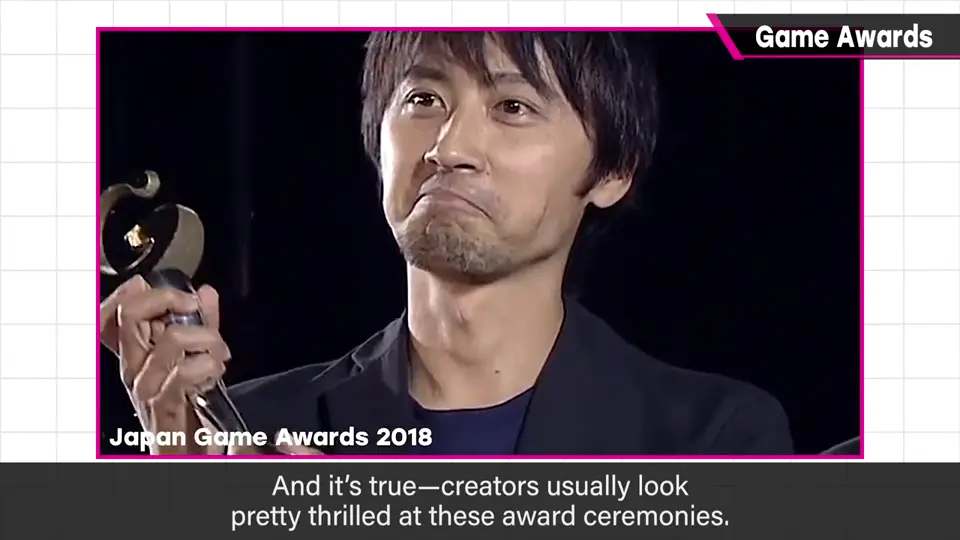
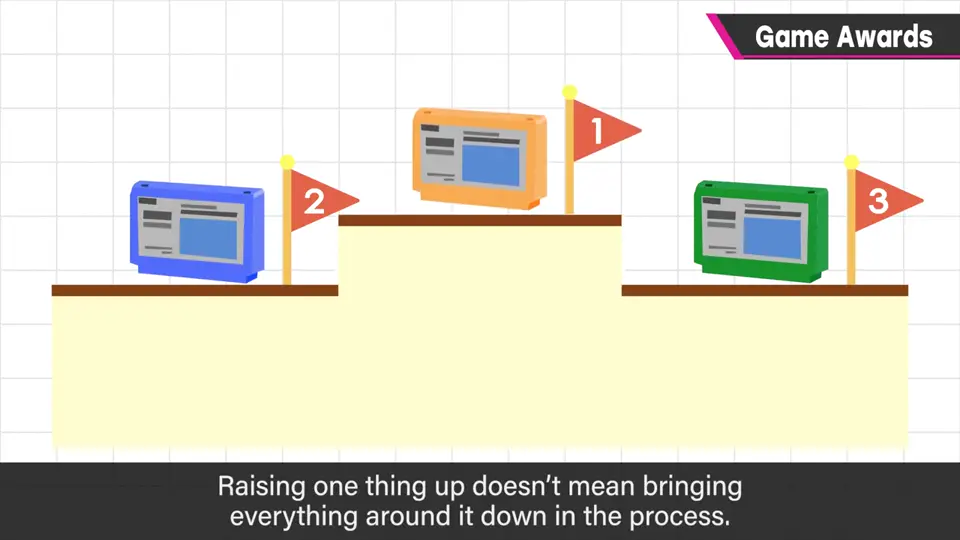
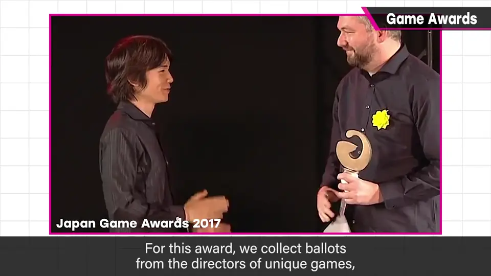
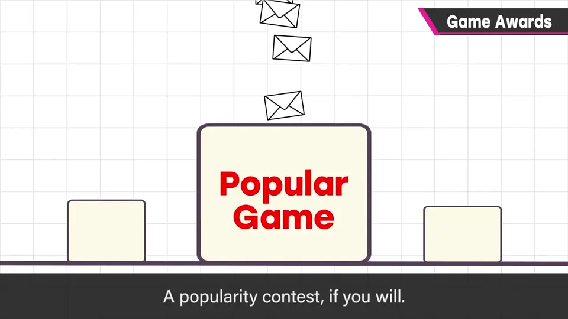
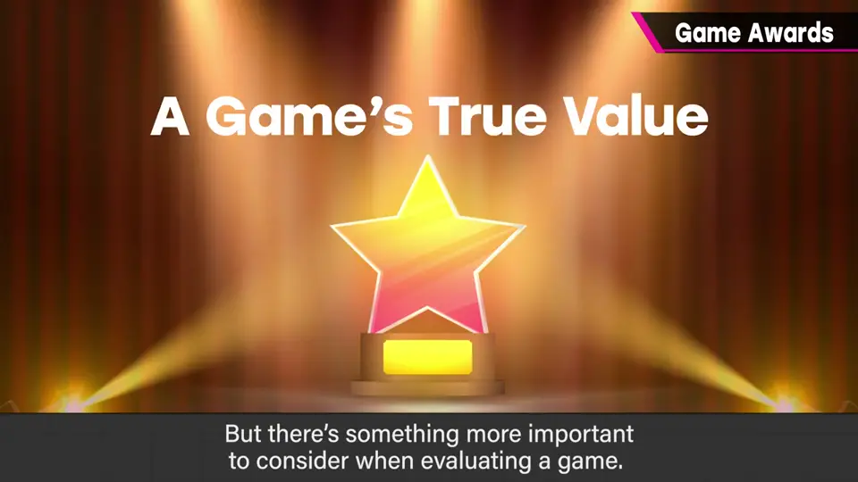

速览
樱井自己也参与日本游戏大赏的活动，这样说有点不好意思：到底是谁、凭什么权利在给游戏评奖呢？先强调他的想法：你觉得好的就是第一名。在拥有多种价值观和方向的游戏里决出一个第一名，他不太赞成——游戏的好在于各自的方向，不是排名，没必要把扩展开的价值观收拢到一处比优劣。但游戏奖项还是多得是，也容易成为话题。为什么存在？他认为是为了让制作者和支持的粉丝高兴。实际在颁奖典礼会场，制作者都很高兴；做出好东西，有超越销量的喜悦是好事，值得欢迎。正因如此，不应该把游戏奖项看成赛跑：抬高某个并不意味着贬低别的，就当作只为让人高兴而存在最好。樱井和他的作品也拿了不少奖，谢谢；本人之外，参与的团队能被表彰、有个纪念最好。他担任游戏设计师大奖的评审委员长：从做出独创作品的导演那里收集选票，以独创性为主题颁奖——被说「做游戏的人去当评论者算什么」也是有觉悟的。日本游戏大赏基本以得票数为最大标准，难免变成人气投票，卖得多、基数大的有利；但游戏还有更重要的东西：与商业无关、游戏所需的独创性，由尝过创作之苦的导演们好好拾起来，这有价值，也有助于培养新芽。总之，游戏奖是为了让做出好游戏的人和粉丝高兴。
1. 谁在给游戏评奖？ 0:00
樱井自己也在参与日本游戏大赏，这样说有些不好意思：到底是谁、凭什么权利在给游戏评奖呢？

2. 不是排名，是方向 0:30
在拥有多种价值观、方向的游戏中决出一个第一名，他不太赞成。游戏的好在于各自的方向，不是排名；没必要把扩展开的价值观收拢到一处比优劣。

3. 奖项为什么存在 0:52
但游戏奖还是多得是，也容易成为话题。为什么存在？他认为是为了让制作者和支持的粉丝高兴。



实际在颁奖典礼会场，制作者都会很高兴。做出好东西，有超越销量的喜悦是好事，值得欢迎。
4. 别把奖项当赛跑 1:20

樱井和他的作品也拿过不少奖，谢谢大家。本人得奖之外，参与的团队能受到表彰、有个纪念，这最好。
5. 游戏设计师大奖 1:56
他担任「游戏设计师大奖」的评审委员长：从做出独创作品的导演们那里收集选票，以独创性为主题颁奖。

「你算老几？」「做游戏的跑去当评论者算什么？」——被这样说也没办法，他有觉悟。
6. 票数之外的价值 2:25
日本游戏大赏基本以得票数为最大判断标准，难免成为人气投票，卖得多、基数大的有利。


总之，游戏奖项是为了让做出好游戏的人和他们的粉丝高兴的东西。
自测题
1. 樱井对「决出游戏第一名」持什么态度？
不太赞成；你觉得好的就是第一，游戏的好在于各自方向而非排名。 0:30
2. 他认为游戏奖项存在的意义是什么？
让做出好游戏的制作者和支持他们的粉丝高兴。 1:00
3. 游戏设计师大奖与以票数为主的奖有何不同？
由做独创作品的导演投票，以独创性为主题，而非人气。 2:00